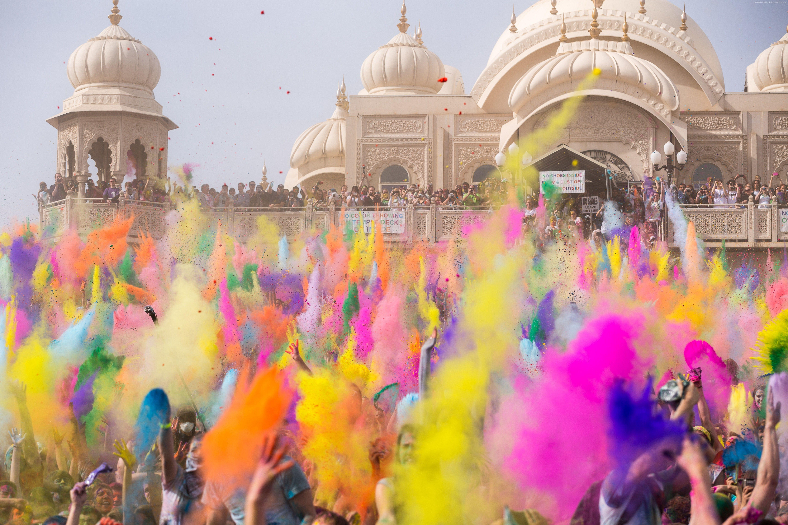
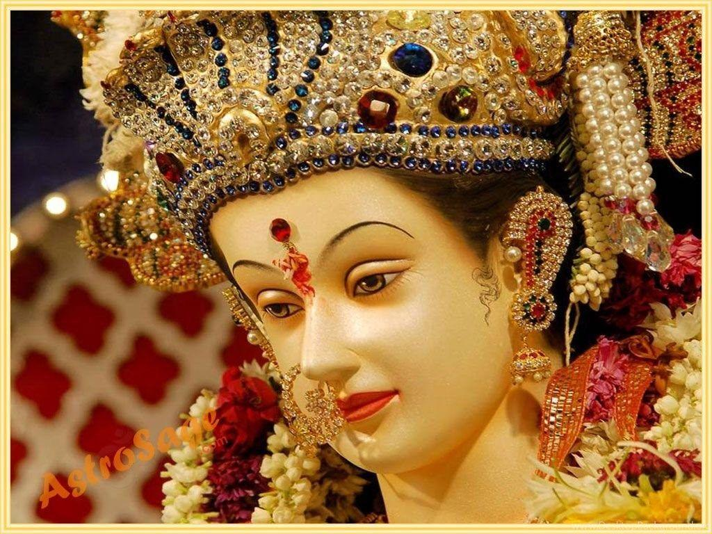
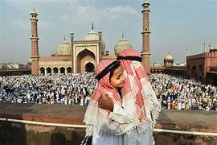
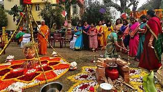
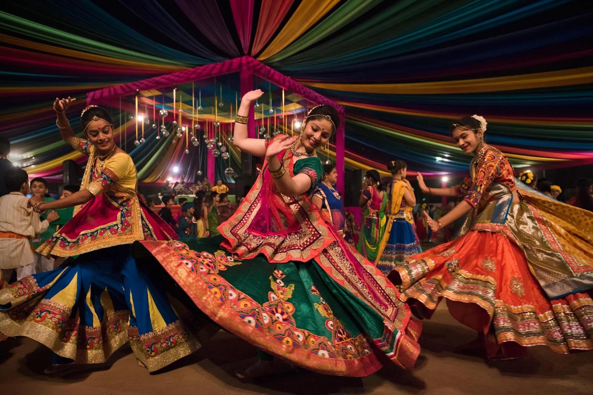

Indian Festivals
India celebrates numerous festivals throughout the year, reflecting its diverse religions and cultures.

Diwali - Festival of Lights
Time: October/November
The most important Hindu festival celebrating the victory of light over darkness. Homes are decorated with diyas (oil lamps), colorful rangoli patterns, and electric lights. Families perform Lakshmi puja, exchange sweets, and burst firecrackers. The festival spans five days with different significance each day.

Holi - Festival of Colors
Time: March
Celebrates the arrival of spring and the victory of good over evil. People play with colored powders (gulal) and water, dance to traditional songs, and enjoy special foods like gujiya and thandai. The night before Holi, bonfires are lit in a ritual called Holika Dahan.

Durga Puja
Time: September/October
Major festival in West Bengal celebrating Goddess Durga's victory over demon Mahishasura. Elaborate pandals (temporary structures) are built to house beautiful idols of the goddess. The festival involves traditional music, dance performances, cultural programs, and culminates with immersion of idols in rivers.

Eid ul-Fitr
Time: Variable (Islamic calendar)
Celebrated by Muslims marking the end of Ramadan fasting month. The day starts with special prayers at mosques, followed by feasting on traditional dishes like biryani, seviyan (vermicelli), and kebabs. People wear new clothes, exchange gifts, and give charity (Zakat al-Fitr) to the poor.

Pongal - Harvest Festival
Time: January
Tamil harvest festival thanking the Sun God for good harvest. The main ritual involves boiling rice in milk outdoors until it overflows (pongal means "to boil over"). Cattle are decorated, and traditional kolam (rangoli) patterns are drawn. The festival spans four days with different rituals.

Navratri
Time: September/October
Nine nights dedicated to worship of Goddess Durga in her nine forms. In Gujarat, people perform Garba and Dandiya Raas dances. Different regions celebrate differently - in North India, Ramlila (reenactment of Ramayana) is performed. The festival ends with Dussehra or Vijayadashami.